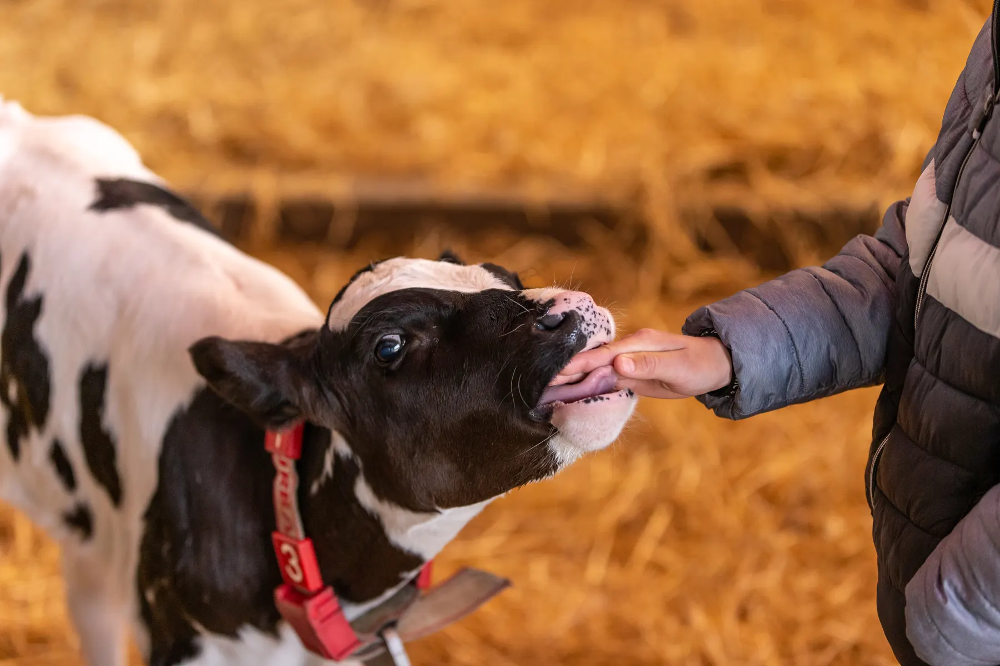
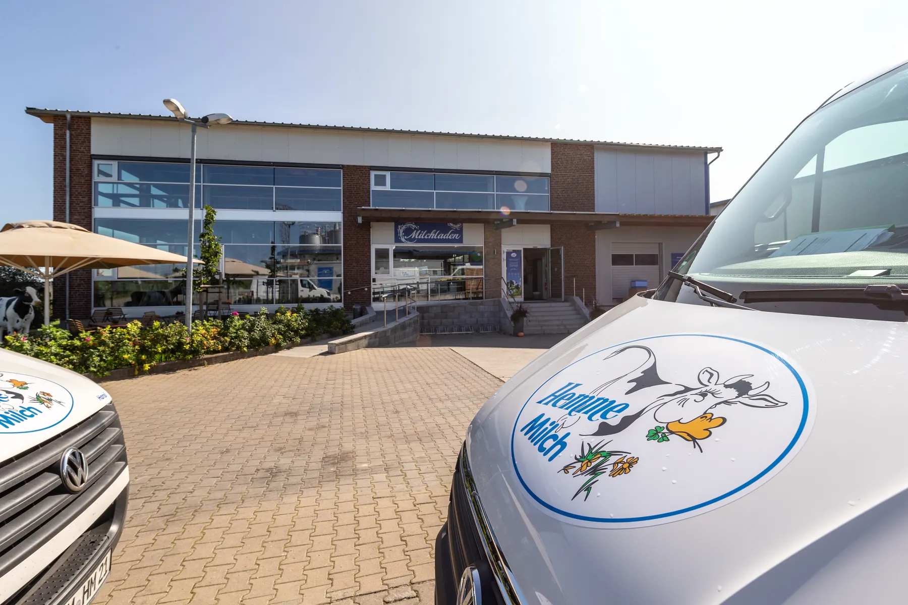

- Startseite
- Karriere
Werde Teil der Familie
Wir freuen uns auf dich
Wir sind eine kleine, regionale, handwerkliche Molkerei in der Uckermark mit eigenem Futteranbau, Kühen, Molkerei, Milchladen und Hofcafé. Hier tun wir das, was wir lieben.



Auf einen Blick
Hemme Milch ist ein Familienbetrieb mit rund 50 Mitarbeitenden in Schmargendorf bei Angermünde. Gearbeitet wird in Landwirtschaft, Molkerei, Lager, Auslieferung, am Milchtelefon und im Hofcafé. Hemme bildet Landwirte, Tierwirte und Milchtechnologen aus.
- Kolleginnen und Kollegen
- 50
- Ausbildungsberufe
- 2
- Arbeitsbereiche vom Feld bis zum Café
- 7
- bei Angermünde
- Uckermark
Offene Stellen
Service im Hofcafé
Mitarbeiter (m/w/d) im Service für unser Hofcafé und den Milchladen.
Hofcafé und MilchladenSocial-Media-Talent
Unterstützung für unser Marketingteam im Minijob.
MinijobMarketingTierpfleger / Tierwirt
Tierpfleger oder Tierwirt (m/w/d) mit Schwerpunkt Rinderhaltung und Tiergesundheit.
LandwirtschaftHerdenmanager:in
Herdenmanagerin oder Herdenmanager für unsere Kühe.
Qualitätsmanagement
Sachbearbeiter Qualitätsmanagement (m/w/d).
Ausbildung bei Hemme
Landwirt / Tierwirt
Ausbildung zum Landwirt oder Tierwirt (m/w/d).
Milchtechnologe
Ausbildung zum Milchtechnologen (m/w/d).
Mit Leidenschaft stellen wir in unserer eigenen Molkerei die Hemme-Milchprodukte her, wie tagesfrische Milch, Joghurt, Quark, Sahne und vieles mehr. Das ist unsere Heimat, werde ein Teil davon!
Arbeiten auf dem Hof
Bei uns gibt es immer etwas zu tun. Die Kolleginnen am Milchtelefon, die Mitarbeitenden im Feldfutterbau, die Tierpflegerinnen und Tierpfleger, die Fachkräfte in der Molkerei, die Lageristen und die Milchfrauen und Milchmänner auf der Liefertour: Sie alle sind das Herzstück unserer handwerklich geprägten Molkerei.
Gunnar Hemme legt Wert auf gute Zusammenarbeit aller Bereiche und lebt diesen Führungsstil jeden Tag.

Fragen zur Bewerbung
Welche Ausbildungen bietet Hemme an?
Landwirt oder Tierwirt (m/w/d) und Milchtechnologe (m/w/d).
Kann ich mich initiativ bewerben?
Ja. Stell dich kurz vor und sag uns, warum wir genau dich in unser familiäres Team aufnehmen sollen.
In welchen Bereichen arbeitet man bei Hemme?
Im Feldfutterbau, im Stall, in der Molkerei, im Lager, auf der Liefertour, am Milchtelefon und im Hofcafé mit Milchladen.
Nicht das Richtige dabei?
Bewirb dich initiativ
Stell dich kurz vor und sag uns, warum wir genau dich in unser familiäres Team aufnehmen sollen.